3Dプリンタ Creality Ender-3 V3 SE の準備
仕様
- 造形サイズ：220x220x250mm
- 本体サイズ：349x364x490mm
- 稼働サイズ：425x560x700mm
- 最大印刷速度：250mm/s
- エクストルーダー：ダイレクト式
- ノズル最高温度：260℃
- プラットフォーム：PCマグネットシート
- レベリングセンサー：CRTOUCH
- フィラメント：PLA/PETG,TPU(95A)
- 印刷精度：±0.1 mm
- 積層ピッチ：0.1mm-0.35mm
- ノズル径：0.4mm
- データ転送方法：SDカード
- 停電再開機能：〇
- ファイル形式：STL/OBJ/AMF/3MF
- スライスソフト：Creality Print Cura5.0/Simplify3D
機器組み立て配線
- 開梱
- SDカード中身をPCに移す
- SDカード内のセットアップ映像を見ながら、機器組み立てと配線を行う
- 配線ルートは可動部との干渉に要注意
フィラメント
- 3D プリンター用フィラメント ZEAKOC ポリ乳酸 Creality Ender PLA
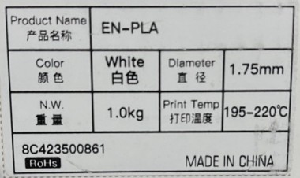
Creality Print（Sliceソフトウェア）セットアップ（PC）
（2024年7月に実施した手順を記す、Creality Printのバージョンは5.1）
- アカウント作成
- サイト
https://www.creality.com/pages/downloadを開いてCreate an account
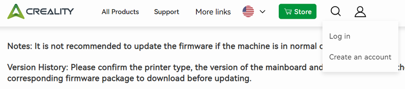 - 必要事項入力して[REGISTER]。
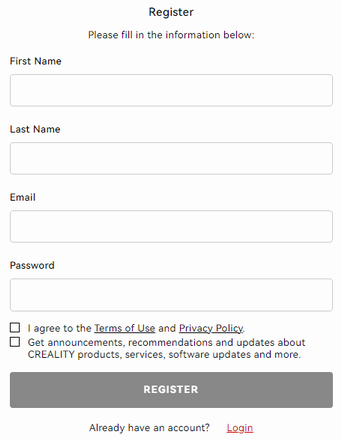
- サイト
- 必要事項入力して[SIGN IN]。
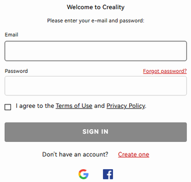 - ダウンロード
- Support / Software Download
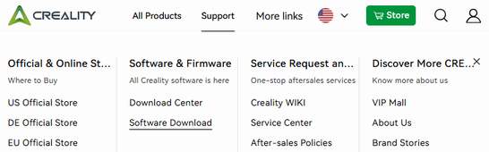 - Creality Printの
Windowsを選択しダウンロード
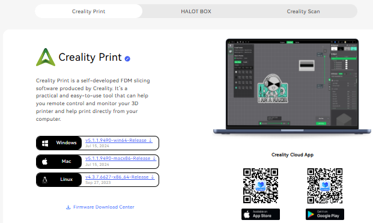
- Support / Software Download
- ダウンロードした実行ファイル（インストーラ―）を起動してCreality Printセットアップ画面の指示に従ってインストール
- [次へ][同意する][次へ][インストール][完了]
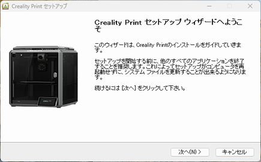 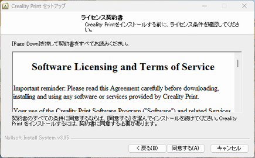 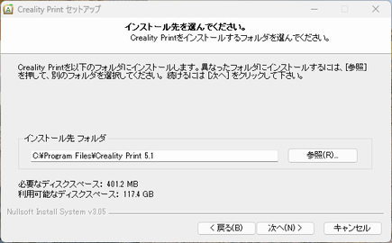 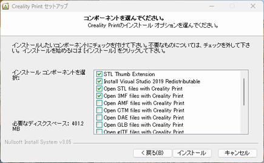 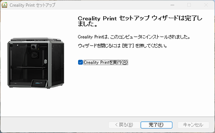
- [次へ][同意する][次へ][インストール][完了]
- Creality Print初回起動
- Language:日本語、Locale:Asia-Pacificを指定して[OK]。
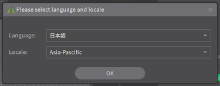 - 機種Ender Seriesの
Ender-3 V3 SEを選択し、ノズル直径 0.4mmをチェックしてOk。
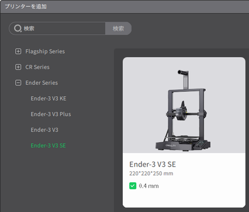 - Creality Cloud ログイン画面で、メールログインを選択し、[今すぐ登録]
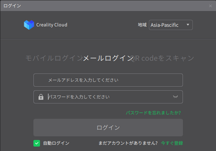 - Email address入力し[Send Code]、受信メールに書かれたVerification Codeを入力、Passwordを指定して[Sign Up]。
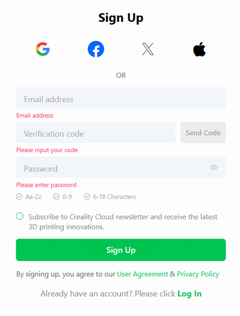 - Creality Cloudにアカウントがある場合は、Creality Cloud ログイン画面で、メールログインを選択し、メールアドレスとパスワードを入力して[ログイン]
- Language:日本語、Locale:Asia-Pacificを指定して[OK]。
一般情報
- 3Dプリンタの平均ノズル径は0.4mm
- 最低肉厚は1.2mm（FDM方式PLA樹脂の場合）
- 層の厚みは0.2mmがデフォルトの場合が多い
- 接合部は0.2㎜以上の隙間が必要になることが多い（FDM方式の場合）
- PLA樹脂の収縮率は0.1％以下
- フィラメントをカットする場合には、フィラメントの巻き方向に対して外側に尖るようにカットする
- PLA樹脂は造形ステージに接着し易いため接着面積は小さくて良い （ABS樹脂は剥がれ易いため接着面積を広くする）
- STLファイルのチェックと修正を行う専用のSTL修正ソフトがある